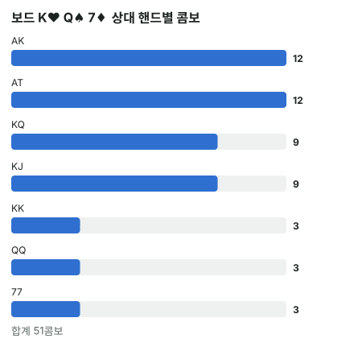

안녕하세요. I07에서 보이는 카드를 빼고 콤보를 다시 세는 법을 배웠죠. 원리는 알겠는데, 테이블에서 매번 곱셈하기는 번거로워요.
오늘은 자주 나오는 경우를 숫자 몇 개로 외워 버리는 법이에요. 그리고 외운 숫자만 믿으면 틀리는 곳이 어디인지도 같이 짚을게요. 거기까지 알아야 "몇 초면 끝"이 진짜가 돼요.
이 글에서 배울 것
- 포켓페어 6 → 3 → 1, 다른 두 숫자 16 → 12 → 9(8)이 어디서 나오는지, 왜 이렇게 줄어드는지
- 수딧과 오프수트를 나눌 때, 보이는 카드의 무늬가 같으냐 다르냐에 따라 숫자가 달라지는 곳
- 테이블에서 상대 핸드 목록을 몇 초 안에 콤보로 바꾸는 순서
1단계. 포켓페어 — 6 → 3 → 1
남은 장수만 보면 돼요
포켓페어는 같은 숫자 두 장이에요. 그 숫자가 보드·우리 손에 몇 장 보이느냐만 보면 돼요.
| 보이는 같은 숫자 | 남은 장수 | 콤보 | 예 (QQ) |
|---|---|---|---|
| 0장 | 4 | 6콤보 | 아무것도 안 보일 때 |
| 1장 | 3 | 3콤보 | 보드에 Q♥ |
| 2장 | 2 | 1콤보 | 보드에 Q♥, Q♦ |
왜 6 → 3 → 1일까
남은 Q 중에서 두 장을 고르는 방법의 수예요.
남은 장수 × (남은 장수 − 1) ÷ 2 → 4 × 3 ÷ 2 = 6, 3 × 2 ÷ 2 = 3, 2 × 1 ÷ 2 = 1 (I07)
÷ 2를 하는 이유는 Q♠Q♥과 Q♥Q♠이 같은 핸드라서예요. 순서만 바꾼 걸 두 번 세지 않으려고 반으로 나누는 거죠.
남은 Q가 3장이면 직접 써 봐도 돼요. Q♠Q♦, Q♠Q♣, Q♦Q♣, 딱 3가지예요.
외우는 이유
비유하면 구구단 외우기예요. 매번 더하지 않고 외워 둔 답을 바로 꺼내 쓰는 거죠. 페어는 경우가 세 가지뿐이라 외우기도 쉬워요.
2단계. 다른 두 숫자 — 16 → 12 → 9 (또는 8)
두 숫자 각각 남은 장수를 곱해요
KQ처럼 숫자가 다른 핸드는 K 하나 고르고, Q 하나 고르는 거예요. 그래서 두 숫자의 남은 장수를 곱해요.
| 보이는 카드 | 계산 | 콤보 |
|---|---|---|
| 없음 | 4 × 4 | 16콤보 |
| K 한 장 | 3 × 4 | 12콤보 |
| K 한 장 + Q 한 장 | 3 × 3 | 9콤보 |
| K 두 장 | 2 × 4 | 8콤보 |
16 → 12 → 9를 외워 두면, 보드에 한 장·두 장 보일 때 바로 나와요.
페어와 달리 ÷ 2가 없는 이유
KQ는 K와 Q가 다른 숫자라 순서를 바꿔도 겹칠 일이 없어요. K♠Q♥은 K♠Q♥ 하나뿐이죠. 그래서 그냥 곱하기만 해요.
9와 8은 왜 다를까
카드가 두 장 보이는 건 같은데 9와 8로 갈려요.
- K 한 장 + Q 한 장: 3 × 3 = 9. 두 숫자가 골고루 한 장씩 줄었어요
- K 두 장: 2 × 4 = 8. 한 숫자만 몰아서 두 장 줄었어요
같은 두 장이라도 한 숫자에 몰리면 곱이 더 작아져요. 그래서 "두 장 보이면 9"가 아니라, 어느 숫자가 몇 장 보이는지를 먼저 봐야 해요.
3단계. 수딧과 오프수트로 나누기
한 장 보일 때: 수딧 3, 오프 9
| 보이는 카드 | 수딧(KQs) | 오프수트(KQo) |
|---|---|---|
| 없음 | 4콤보 | 12콤보 |
| K♥ 한 장 | 3콤보 | 9콤보 |
- 수딧: K♥이 보이니 K♥Q♥이 사라져서 4 → 3
- 오프수트: K♥이 보일 때 KQ 전체는 2단계의 3 × 4 = 12콤보. 거기서 수딧 3을 빼면 12 − 3 = 9
💡 빨리 세는 팁: 한 장 보이면 수딧 3, 오프 9, 합 12
두 장 보일 때: 무늬가 같으냐 다르냐
여기가 외운 숫자만 믿으면 틀리는 곳이에요. K 한 장, Q 한 장이 보이면 KQ 전체는 늘 9콤보예요. 그런데 수딧이 몇 개냐는 두 카드의 무늬에 따라 달라요.
| 보이는 카드 | KQ 전체 | 수딧(KQs) | 오프수트(KQo) |
|---|---|---|---|
| K♥·Q♥ (같은 무늬) | 9콤보 | 3콤보 | 6콤보 |
| K♥·Q♠ (다른 무늬) | 9콤보 | 2콤보 | 7콤보 |
- 같은 무늬가 보이면 사라지는 수딧은 K♥Q♥ 하나뿐이에요. 그래서 수딧이 3개 남아요
- 다른 무늬가 보이면 K♥Q♥(K♥이 없음)과 K♠Q♠(Q♠이 없음), 두 개가 사라져요. 그래서 수딧이 2개만 남아요
이게 무슨 뜻이냐면, 수딧 콤보는 "두 숫자가 둘 다 남아 있는 무늬"의 개수라는 거예요. 같은 무늬로 보이면 무늬 하나만 망가지고, 다른 무늬로 보이면 무늬 두 개가 망가져요.
같은 숫자 두 장이 보일 때
K 두 장이 보이면(K♥·K♦) 남은 K는 ♠·♣ 두 장이에요. KQs는 K♠Q♠, K♣Q♣로 2콤보, 전체 8에서 빼면 오프수트는 8 − 2 = 6콤보예요.
4단계. 테이블에서 쓰는 순서
- 상대가 가질 핸드를 떠올린다(예: KQ)
- 그 두 숫자가 보드·우리 손에 몇 장 보이는지 센다
- 외운 숫자로 전체를 답한다: 페어 6·3·1, 다른 두 숫자 16·12·9(8)
- 수딧·오프를 나눠야 하면 보이는 카드의 무늬를 한 번 더 본다
테이블에서 따라 해 보기: 보드 K♥ Q♠ 7♦
이제 제목의 "몇 초면 끝"을 실제로 해 볼게요. 우리 손은 J♠T♠, 플랍은 K♥ Q♠ 7♦예요. 상대가 이 보드에서 크게 걸 만한 핸드로 KK·QQ·77(셋), KQ(투페어), AK·KJ(탑페어), AT(거트샷)를 떠올렸다고 해 볼게요.
보이는 카드는 K♥ Q♠ 7♦ J♠ T♠, 다섯 장이에요. 핸드마다 "그 숫자가 몇 장 보이나"만 보고 외운 숫자를 꺼내요.
| 상대 핸드 | 보이는 카드 | 외운 숫자 | 콤보 |
|---|---|---|---|
| KK | K 한 장 | 페어 1장 보임 | 3콤보 |
| Q 한 장 | 페어 1장 보임 | 3콤보 | |
| 77 | 7 한 장 | 페어 1장 보임 | 3콤보 |
| KQ | K 한 장, Q 한 장 | 다른 두 숫자, 한 장씩 보임 → 9 | 9콤보 |
| AK | K 한 장 | 다른 두 숫자, 한 장 보임 → 12 | 12콤보 |
| KJ | K 한 장, J 한 장(우리 손) | 한 장씩 보임 → 9 | 9콤보 |
| AT | T 한 장(우리 손) | 한 장 보임 → 12 | 12콤보 |
| 합계 | 51콤보 |

하나씩 보면 전부 "몇 장 보이나 → 외운 숫자"예요. 곱셈을 처음부터 하지 않으니 한 줄에 1~2초면 돼요.
표에서 바로 보이는 것
셋 세 종류를 다 합쳐도 3 + 3 + 3 = 9로, KQ 하나와 같아요. 그리고 AK·AT는 하나씩만 해도 각각 셋 세 종류를 합친 것보다 많아요.
이게 무슨 뜻이냐면, "상대가 셋이면 어떡하지?"보다 이 레인지를 가정하면 콤보 수로는 AK·AT가 셋보다 많다는 거예요. "셋이면 어떡하지?"보다 "AK나 AT면?"을 먼저 따져야 하는 이유죠. 이 비교를 테이블에서 몇 초 안에 할 수 있게 해 주는 게 외운 숫자예요.
왜 그럴까: 외운 숫자 뒤에는 "남은 카드로 만들 수 있는 짝"이 있어요
페어는 갈수록 더 가파르게 줄어요
페어는 6 → 3 → 1이에요. 한 장 보이면 절반, 두 장째에는 3에서 1로 3분의 1이 돼요. 두 번째가 더 가파르죠.
이유는 남은 카드가 적을수록 한 장이 들어간 짝의 비중이 커지기 때문이에요. 남은 Q가 3장(Q♠·Q♦·Q♣)이면 짝은 Q♠Q♦, Q♠Q♣, Q♦Q♣ 세 개예요. 여기서 Q♠이 보이면 Q♠이 들어간 두 짝이 한꺼번에 사라지고 Q♦Q♣ 하나만 남아요. 세 장이 다 보이면 남은 Q는 1장이라 짝을 못 지어 0콤보고요.
반면 다른 두 숫자는 K 한 장이 보여도 K 자리만 영향을 받아요. 4 × 4에서 3 × 4로, 한 줄(4개)만 빠지니 4분의 1이 줄어요. 그다음 Q가 보이면 12 → 9로 또 4분의 1, K가 또 보이면 12 → 8로 3분의 1이 줄어요. 2단계에서 9와 8이 갈린 이유가 바로 이거예요.
수딧은 "무늬 네 칸" 체크로 0.5초
수딧을 셀 때 외운 숫자보다 빠른 방법이 있어요. 무늬 네 칸(♠·♥·♦·♣)을 떠올리고, 보이는 카드 중 그 핸드의 숫자(KQs라면 K와 Q)인 카드만 골라 그 무늬 칸을 지우는 거예요. 보드의 다른 숫자 카드는 수딧 수와 상관없어요.
K♥·Q♥이 보이면 지워지는 칸은 ♥ 하나 → 남은 칸 3개, 수딧 3이에요. K♥·Q♠이 보이면 ♥칸(K가 없음)과 ♠칸(Q가 없음)이 지워져 → 남은 칸 2개, 수딧 2예요. 보이는 K·Q 카드의 무늬가 몇 종류냐만 보면 되는 거죠.
검산은 "수딧 + 오프 = 전체"
외운 숫자를 꺼냈다면 마지막에 한 번만 맞춰 보세요. 수딧과 오프수트를 더하면 늘 전체와 같아야 해요. K♥·Q♠이 보일 때 수딧 2 + 오프 7 = 9, 전체 3 × 3 = 9와 맞죠. 안 맞으면 어딘가 잘못 센 거예요.
자주 하는 실수
실수 1. 두 장 보이면 무조건 9 "16 → 12 → 9"를 외우면 두 장 보일 때 9라고 바로 말하기 쉬워요. 하지만 K 두 장이 보이면 2 × 4 = 8이에요. 한 숫자에 몰리면 더 작아져요. 대신 숫자마다 몇 장 보이는지를 따로 세세요.
실수 2. 수딧은 늘 "한 장 빠지면 3" 한 장 보일 때 수딧 3은 맞아요. 그런데 K♥·Q♠처럼 다른 무늬 두 장이 보이면 수딧은 2콤보예요. 3이라고 하면 하나를 더 세는 거죠. 두 장 이상 보이면 무늬별로 확인해요.
실수 3. 수딧과 오프를 따로 외워서 합이 안 맞기 "한 장 보이면 수딧 3, 오프 9"를 두 장 보일 때도 그대로 쓰면, K♥·Q♠이 보일 때 수딧 3 + 오프 9 = 12처럼 전체(9)보다 커져요. 수딧과 오프는 따로 외우는 숫자가 아니라 전체를 나눈 것이에요. 전체부터 구하고, 수딧을 센 뒤, 오프는 전체 − 수딧으로 구하세요.
"세 장 넘게 보이면요?"
좋은 질문이에요. 그때도 원리는 같아요. 남은 장수끼리 곱하거나(다른 두 숫자), 남은 장수에서 두 장 고르기(페어).
예를 들어 보드에 K♥ K♦, 우리 손에 K♠이 있다면 남은 K는 K♣ 한 장뿐이에요. 상대 KQ는 1 × 4 = 4콤보, KK는 남은 K가 1장이라 짝을 못 지어 0콤보예요. 이게 무슨 뜻이냐면, 같은 숫자가 많이 보일수록 그 숫자가 든 핸드는 거의 사라진다는 거예요. 외운 숫자가 없으면 I07의 방법으로 차근차근 세면 돼요.
선생님의 한마디
- 상대 레인지를 떠올리면 핸드마다 한 줄씩, 외운 숫자로 콤보를 적어 두기
- 수딧·오프 구분은 레인지에 수딧만 들어 있거나, 같은 무늬가 두 장 이상 깔린 보드에서 하기 — 나머지는 전체 숫자로 충분해요
- 다 세면 "이름이 무서운 핸드"와 "콤보가 많은 핸드"를 나란히 놓고 비교하기
연습 문제
학습툴에는 콤보를 세 주는 칸이 없어요. 외운 숫자와 무늬 확인으로 직접 답해 보세요.
문제 1. 플랍이 K♥ Q♠ 8♣이고, 우리 손에 K♦이 있어요. 상대 KQ는 모두 몇 콤보? 그중 KQs와 KQo는 각각 몇 콤보?
정답 보기
K가 두 장(K♥·K♦), Q가 한 장(Q♠) 보여요 → 2 × 3 = 6콤보. KQs: 남은 K는 ♠·♣, 남은 Q는 ♥·♦·♣ → 둘 다 남은 무늬는 ♣ 하나 → 1콤보. KQo는 6 − 1 = 5콤보. 보이는 K·Q 카드(K♥·K♦·Q♠)의 무늬가 세 종류라 무늬 칸이 세 개 지워졌어요. 8♣은 K·Q가 아니라 상관없어요.
문제 2. 보드 J♥ T♥ 4♣, 우리 손 J♠ 9♦. 상대가 셋(JJ·TT·44)이나 투페어 JT를 들고 있다면 각각 모두 몇 콤보일까요?
정답 보기
셋: JJ는 J가 보드·우리 손에 한 장씩이라 남은 J 2장 → 1. TT·44는 3씩. 1 + 3 + 3 = 7콤보. 투페어 JT: 남은 J 2장 × 남은 T 3장 = 6콤보. 우리 손의 J♠ 한 장이 상대의 셋과 투페어를 둘 다 줄였어요.
핵심 정리
- 페어 콤보 = 남은 장수에서 두 장 고르기(6 → 3 → 1), 다른 두 숫자 = 남은 장수끼리 곱하기(16 → 12 → 9, 한 숫자에 몰리면 8)
- 페어는 한 장 보이면 절반, 두 장째는 더 가파르게 줄고, 다른 두 숫자는 한 줄씩 빠져요
- 수딧 콤보 = 두 숫자가 둘 다 남아 있는 무늬 수. 두 장 보일 때는 같은 무늬면 3, 다른 무늬면 2
- 수딧 + 오프 = 전체. 오프는 전체 − 수딧으로 구해요
정리하며
오늘은 콤보 세기를 외운 숫자로 줄였어요. 페어 6 → 3 → 1은 남은 카드에서 두 장 고르기, 다른 두 숫자 16 → 12 → 9는 남은 카드끼리 곱하기에서 나왔죠. 그리고 수딧·오프를 나눌 때는 보이는 카드의 무늬까지 봐야 한다는 것, 외운 숫자가 틀리는 바로 그곳도 확인했어요.
이 숫자들이 몸에 붙으면, 상대 레인지 목록을 콤보로 바꾸는 데 몇 초면 충분해요.
다음 글 I30은 중급 마무리 시험이에요. 지금까지 배운 필요 에퀴티·아웃츠·레인지·콤보를 새 문제로 풀어 보면서, 상급으로 올라갈 준비가 됐는지 확인해요.
AI 작성 · 숫자는 계산 검증 (콤보는 실제 카드로 하나씩 셈)